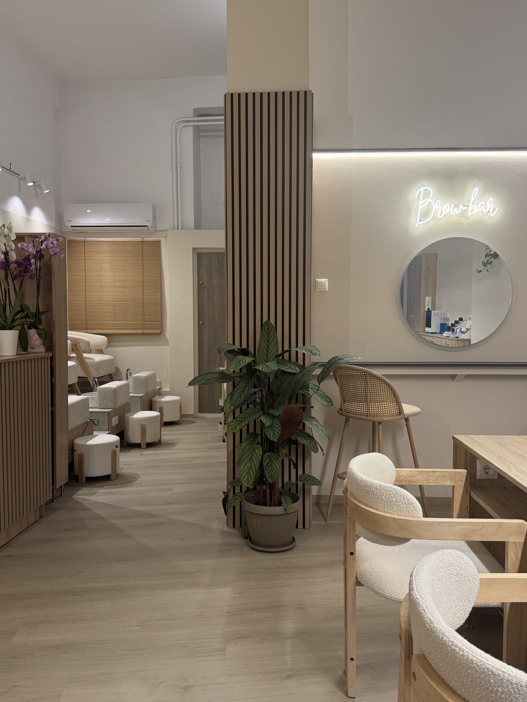

Every face has its own harmony.
At MYNE, brow design starts with you. Through personalised brow mapping we study the proportions and features of your face, so that the shape brings out what is naturally yours.

What brow mapping is
Brow mapping is brow design by measurement rather than by eye. Before shaping, we mark on your face where each brow should begin, peak and end, based on your own features.
The result is a shape that belongs to your face, not to a photograph.
Why proportions matter
Brows frame the eyes and change the expression of the whole face. The same shape looks different on two people, because the distance between the eyes, the forehead and the line of the nose all differ.
There is no brow shape that suits everyone. There is the shape that suits your face.
Pending: a real example from Eva of how proportions change the shape
How it works, step by step
Pending: Eva to confirm and enrich the steps. One photograph per step.
- Conversation. You tell us what you like, what bothers you and how you look after your brows.
- Measuring. We mark the reference points on your face.
- Design. The shape is drawn first, so you can see it and agree.
- Shaping. We shape with attention to symmetry and the natural line.
- Result. You leave knowing how to maintain it.
Eva
Eva is the brow artist and owner of MYNE. Pending: short biography approved by Eva. No titles or certifications she has not confirmed.
I don't draw the same brows on every face. Every face has its own balance. My job is to find it.
Pending: 4–6 before-and-after pairs with customer consent. Section hidden until then.
Brow services
Shaping
A shape that follows the proportions of your face. Pending: whether brow mapping is included in shaping or offered separately
Tint
A tint chosen for your colouring, for depth and evenness.
Lamination
Brow hairs are set in the direction that suits them. Brows look fuller and stay in place.
Waxing
Tidying the area around the brows with wax.
Before and after your appointment
Pending: preparation and aftercare guidance from Eva
Brow questions
Where can I get professional brow mapping in Athens?
At MYNE Nails & Brows, Kallirrois 74, Koukaki. Brows are designed from the proportions of your face. Book online or call +30 210 923 6859.
What makes brow mapping different from regular eyebrow shaping?
Regular shaping usually follows the line that is already there. Brow mapping begins one step earlier: it first establishes which line suits your face, then shapes to it.
How much does brow shaping cost?
€15, taking about 20 minutes. Shaping with a tint is €20 and takes 30 minutes.
What is brow lamination and what does it cost?
A treatment that sets brow hairs in the direction you want, for a fuller look. It costs €35 and takes 50 minutes; with a tint, €40 and 60 minutes.
How often should I have my brows shaped?
Pending: Eva's answer
Can I have brows and lashes done in one appointment?
Yes. There are two combinations: brows and lash lift at €60, and with tint at €70.